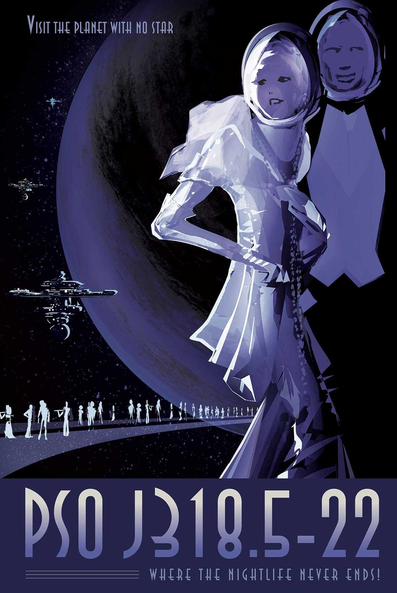

Discovered in October 2013 using direct imaging, PSO J318.5-22 belongs to a special class of planets called rogue, or free-floating, planets. Wandering alone in the galaxy, they do not orbit a parent star. Not much is known about how these planets come to exist, but scienti